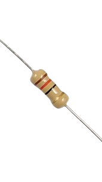
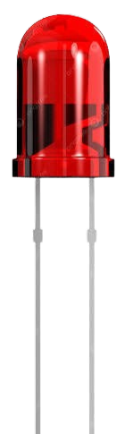
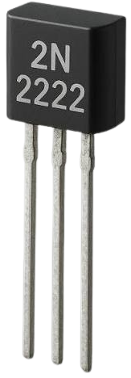
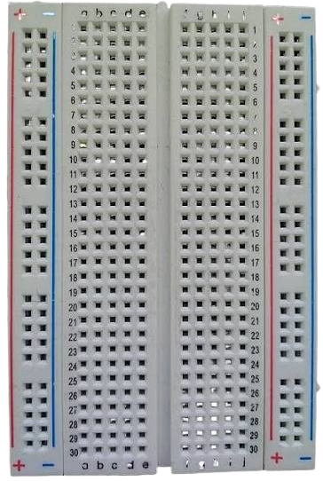
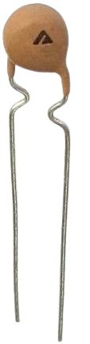
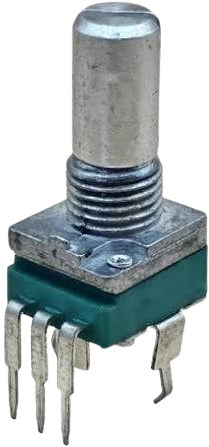

Electrónica
Es una rama de la física y de la ingeniería que estudia y controla el flujo de electrones y otras partículas cargadas eléctricamente en materiales como semiconductores, gases o el vacío. Su propósito principal no es solo conducir energía, sino manipularla en forma de señales para procesar, almacenar y transmitir información.


A lo largo de la historia, esta disciplina se ha diversificado en numerosas ramas especializadas debido al avance tecnológico. Las áreas clásicas incluyen la ingeniería civil, enfocada en infraestructuras como puentes y carreteras; la ingeniería mecánica, dedicada al diseño de maquinaria y sistemas térmicos; la ingeniería eléctrica, que se ocupa de la generación y distribución de energía; y la ingeniería química, centrada en la transformación de materias primas.
En las últimas décadas, la ingeniería de sistemas y de software ha cobrado un rol protagónico debido a la digitalización global. El trabajo de un ingeniero combina la creatividad con un riguroso análisis analítico. El proceso de diseño en ingeniería implica identificar un problema, investigar las restricciones existentes, proponer soluciones innovadoras, crear prototipos y realizar pruebas exhaustivas antes de la implementación final.
Resistencia: Este componente se encarga de limitar y regular el flujo de la corriente eléctrica dentro de un circuito. Su función principal es oponerse al paso de la electricidad para proteger a otros elementos más sensibles de sobrecargas y caídas de voltaje destructivas.

Diodo: Es un componente semiconductor que actúa como una válvula de una sola vía, permitiendo que la corriente fluya en una única dirección y bloqueándola en sentido contrario. Una de sus variantes más conocidas es el LED, que emite luz visible cuando es atravesado por la electricidad.

Transistor: Considerado el bloque de construcción de la electrónica moderna, funciona como un interruptor electrónico o como un amplificador de señal. Permite controlar una corriente eléctrica grande a partir de una señal muy pequeña, lo que hace posible la lógica digital de las computadoras.

Placa de pruebas (Breadboard): Es una tabla con orificios conectados internamente que permite diseñar y probar circuitos electrónicos provisionales sin necesidad de soldar. Facilita la inserción y el intercambio rápido de componentes durante la fase de prototipado.

Fotorresistencia (LDR): Es un componente cuya resistencia eléctrica disminuye a medida que aumenta la intensidad de la luz que incide sobre él. Se utiliza ampliamente para detectar la ausencia o presencia de luz solar en sistemas de iluminación automática o alarmas.

Potenciómetro: Consiste en una resistencia variable mecánica cuyo valor se puede ajustar manualmente girando una perilla o deslizando una palanca. Se emplea habitualmente para controlar magnitudes de forma analógica, como el volumen de un equipo de música o la intensidad de una lámpara.
